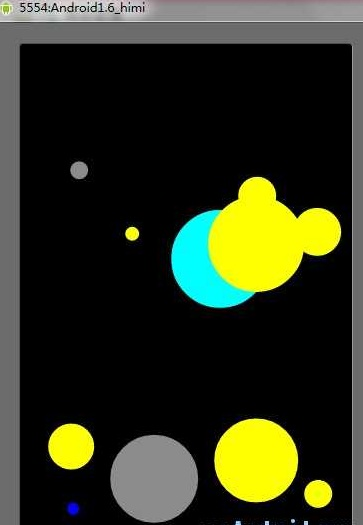
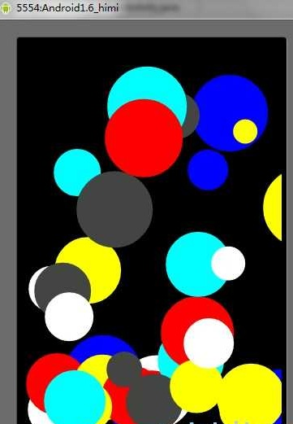

【Android2D游戏开发二十】物理游戏之重力系统开发
先大概说一下，之前的文章中，给大家介绍过重力传感器,那么和今天要说的重力系统,其实是一样的！
在重力传感器中，虽然我也实现了一个圆形会根据手机反转的角度而拥有不同的速度,但是其内置加速度算法都是Android os封装好的，而今天我们要讲的重力系统就是去模拟这个加速度，从而让一个自由落体的圆形，感觉跟现实中的皮球一样有质有量!下落的时候速度加快，反弹起来以后速度慢慢减下来~
OK,先上两张截图，然后简单介绍之后进行讲解：


Demo：简介：(咳咳、玩的有点H，狂点按钮搞的满屏都是 - -)
当你点击模拟器任意按键的时候会随机在屏幕上生成一个随机大小、随即颜色、随即位置、不停闪烁的一个圆形，并且圆形都拥有重力，在做自由落体，当圆形触到屏幕底部的时候会反弹，并且反弹的高度一次比一次低！
这个实例中，为了好看，我没有让圆形最终慢到停下来，会一直在一个高度进行的反弹，下落；还有一点：对于圆形当从一个高度自由落体的时候可能它在X坐标系上没有发生改变，当然这属于理想状态，因为现实生活中，一般X/Y坐标系都会有变动，在此Demo中，我主要把垂直下落并且反弹的功能做出来了，关于水平的加速度我没做，第一是因为和垂直的处理思路基本一致，第二点我没时间 - -...好了 不废话！先介绍一下我自定义的圆形类：MyArc.java
import java.util.Random;import android.graphics.Canvas;
import android.graphics.Color;
import android.graphics.Paint;
import android.graphics.RectF;
/**
* @author android
* @自定义圆形类
*/
public class MyArc {
private int arc_x, arc_y, arc_r;// 圆形的X,Y坐标和半径
private float speed_x = 1.2f, speed_y = 1.2f;// 小球的x、y的速度
private float vertical_speed;// 加速度
private float horizontal_speed;// 水平加速度,大家自己试着添加吧
private final float ACC = 0.135f;// 为了模拟加速度的偏移值
private final float RECESSION = 0.2f;// 每次弹起的衰退系数
private boolean isDown = true;// 是否处于下落 状态
private Random ran;// 随即数库
/**
* @定义圆形的构造函数
* @param x
* 圆形X坐标
* @param y
* 圆形Y坐标
* @param r
* 圆形半径
*/
public MyArc(int x, int y, int r) {
ran = new Random();
this.arc_x = x;
this.arc_y = y;
this.arc_r = r;
}
public void drawMyArc(Canvas canvas, Paint paint) {// 每个圆形都应该拥有一套绘画方法
paint.setColor(getRandomColor());// 不断的获取随即颜色，对圆形进行填充(实现圆形闪烁效果)
canvas.drawArc(new RectF(arc_x + speed_x, arc_y + speed_y, arc_x + 2
* arc_r + speed_x, arc_y + 2 * arc_r + speed_y), 0, 360, true,
paint);
}
/**
* @return
* @返回一个随即颜色
*/
public int getRandomColor() {
int ran_color = ran.nextInt(8);
int temp_color = 0;
switch (ran_color) {
case 0:
temp_color = Color.WHITE;
break;
case 1:
temp_color = Color.BLUE;
break;
case 2:
temp_color = Color.CYAN;
break;
case 3:
temp_color = Color.DKGRAY;
break;
case 4:
temp_color = Color.RED;
break;
case 6:
temp_color = Color.GREEN;
case 7:
temp_color = Color.GRAY;
case 8:
temp_color = Color.YELLOW;
break;
}
return temp_color;
}
/**
* 圆形的逻辑
*/
public void logic() {// 每个圆形都应该拥有一套逻辑
if (isDown) {// 圆形下落逻辑
/*--备注1-*/
speed_y += vertical_speed;// 圆形的Y轴速度加上加速度
int count = (int) vertical_speed++;
// 这里拿另外一个变量记下当前速度偏移量
// 如果下面的for (int i = 0; i < vertical_speed++; i++) {}这样就就死循环了 - -
for (int i = 0; i < count; i++) {// 备注1
/*--备注2-*/
vertical_speed += ACC;
}
} else {// 圆形反弹逻辑
speed_y -= vertical_speed;
int count = (int) vertical_speed--;
for (int i = 0; i < count; i++) {
vertical_speed -= ACC;
}
}
if (isCollision()) {
isDown = !isDown;// 当发生碰撞说明圆形的方向要改变一下了！
vertical_speed -= vertical_speed * RECESSION;// 每次碰撞都会衰减反弹的加速度
}
}
/**
* 圆形与屏幕底部的碰撞
*
* @return
* @返回true 发生碰撞
*/
public boolean isCollision() {
return arc_y + 2 * arc_r + speed_y >= MySurfaceViee.screenH;
}
}
代码比较简单主要讲解下几个备注：备注1： 估计有些同学看到这里有点小晕，我解释下，大家都知道自由落体的时候，速度是越来越快的，这是收到加速度的影响，所以这里我们对原有的圆形y速度基础上再加上加速度！ 备注2：虽然加速度影响了圆形原有的速度，但是我们的加速度也不是恒定的,为了模拟真实球体的自由下落，这里我们不仅对加速度增加了偏移量ACC,而且我们还要对其变化的规律进行模拟，让下次的加速度偏移量成倍增加！所以为什么要for循环的时候把加速度的值当成for循环的一个判定条件！好了，下面来看我们SurfaceView!
import java.util.Random;import java.util.Vector;
import android.content.Context;
import android.graphics.Canvas;
import android.graphics.Color;
import android.graphics.Paint;
import android.util.Log;
import android.view.KeyEvent;
import android.view.SurfaceHolder;
import android.view.SurfaceView;
import android.view.SurfaceHolder.Callback;
public class MySurfaceViee extends SurfaceView implements Callback, Runnable {
private Thread th;
private SurfaceHolder sfh;
private Canvas canvas;
private Paint paint;
private boolean flag;
public static int screenW, screenH;
private Vector<MyArc> vc;// 这里定义装我们自定义圆形的容器
private Random ran;// 随即库
public MySurfaceViee(Context context) {
super(context);
this.setKeepScreenOn(true);
vc = new Vector<MyArc>();
ran = new Random();// 备注1
sfh = this.getHolder();
sfh.addCallback(this);
paint = new Paint();
paint.setAntiAlias(true);
setFocusable(true);
}
public void surfaceCreated(SurfaceHolder holder) {
flag = true;// 这里都是上一篇刚讲过的。。。
th = new Thread(this);
screenW = this.getWidth();
screenH = this.getHeight();
th.start();
}
public void draw() {
try {
canvas = sfh.lockCanvas();
canvas.drawColor(Color.BLACK);
if (vc != null) {// 当容器不为空，遍历容器中所有圆形画方法
for (int i = 0; i < vc.size(); i++) {
vc.elementAt(i).drawMyArc(canvas, paint);
}
}
} catch (Exception e) {
} finally {
try {
if (canvas != null)
sfh.unlockCanvasAndPost(canvas);
} catch (Exception e2) {
}
}
}
private void logic() {// 主逻辑
if (vc != null) {// 当容器不为空，遍历容器中所有圆形逻辑
for (int i = 0; i < vc.size(); i++) {
vc.elementAt(i).logic();
}
}
}
@Override
public boolean onKeyDown(int keyCode, KeyEvent event) {
// 当按键事件响应，我们往容器中仍个我们的圆形实例
vc.addElement(new MyArc(ran.nextInt(this.getWidth()), ran.nextInt(100),
ran.nextInt(50)));
return true;
}
public void run() {
while (flag) {
logic();
draw();
try {
Thread.sleep(100);
} catch (Exception ex) {
}
}
}
public void surfaceChanged(SurfaceHolder holder, int format, int width,
int height) {
Log.v("android", "surfaceChanged");
}
public void surfaceDestroyed(SurfaceHolder holder) {
flag = false;
}
}
补充下：//备注1 这里！有的童鞋说for循环可以简写：这我就要提示各位童鞋了~
for (int i = 0; i < count; i++) { vertical_speed += ACC;
}
以上代码确实可以用一句来表示：
vertical_speed +=ACC*count;
或者
vertical_speed =vertical_speed + ACC*count;
但是要注意：因为我这里变量都是浮点数，大家都知道对于浮点数有位数的限制，那么我这里用for来写可以避免乘积，如果简写的形式会有造成得到的结果有差异！！！！所以要注意；
还有千万不要简写成 vertical_speed =(vertical_speed +ACC)*count; 这是错误的！